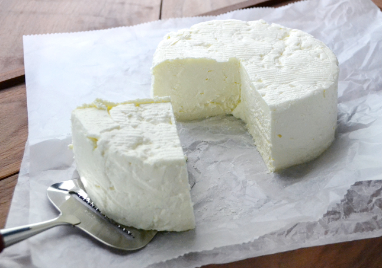
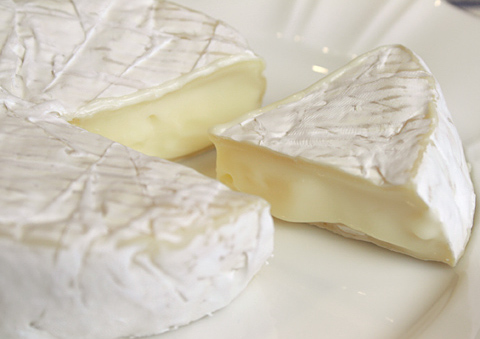
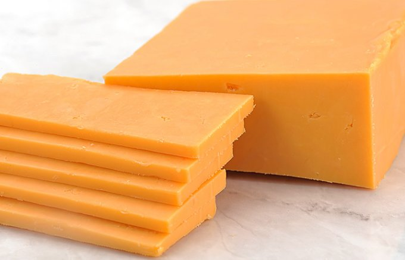

卒業制作例
卒業制作で人気のチーズの紹介
チーズは各自で自由に選択できます。

フレッシュチーズ
熟成させないために、クセが少なく、料理やお菓子に最適なチーズです。 生乳に酵素や乳酸菌を加えて固め、水分を抜くと完成です。見た目は豆腐に近い感じもします！

カマンベール
1000年ほどの歴史があります。 もっちりとした舌触りとマイルドな味が特徴的で白カビチーズの一種です。日本人の舌には最も合うチーズと言われています。

ゴルゴンゾーラチーズ
青カビチーズの一種でローマ貴族もワイン片手に楽しんだと言われています。リゾットやピザにのせて焼いてもよし、甘味を生かしてパイやケーキの材料としてもよしです。